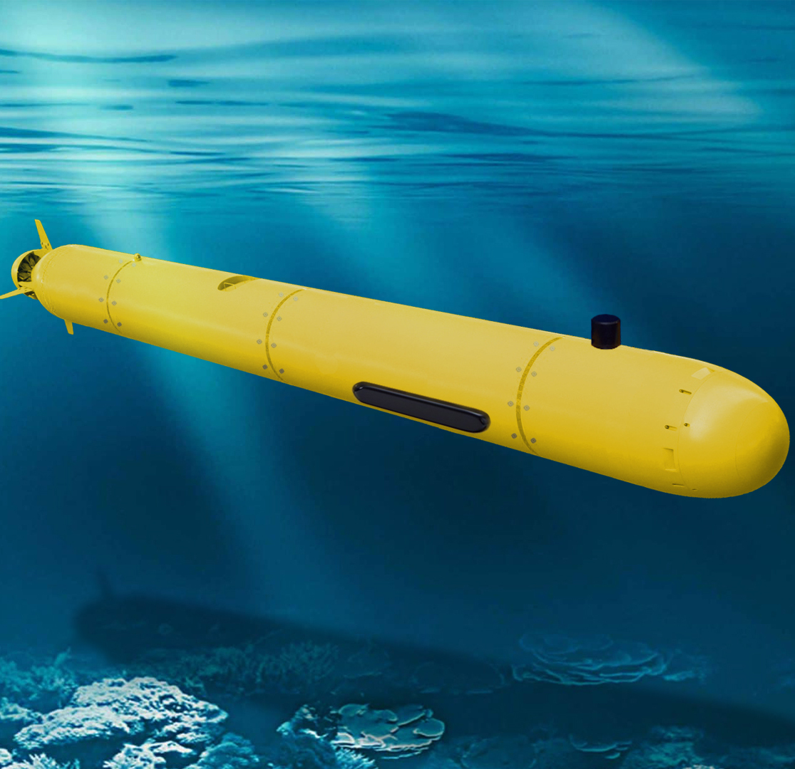

Автономный необитаемый подводный аппарат
Автономный необитаемый подводный аппарат — плавучий объект, подводный робот, напоминающий торпеду или подводную лодку, перемещающийся под водой с целью сбора информации о рельефе дна, о строении верхнего слоя осадков, о наличии на дне предметов и препятствий. Питание аппарата осуществляется от аккумуляторов или другого типа батарей. Некоторые разновидности АНПА способны погружаться до глубины 6000 м. АНПА используются для площадных съёмок, для мониторинга подводных объектов, например трубопроводов, поиска и обезвреживания подводных мин.
АНПА представляют собой особый класс подводно-технических средств (ПТС) с присущими только им функциональными и конструктивными особенностями. Создание и разработка АНПА является сложно реализуемой задачей ввиду выдвигаемых противоречивых требований по использованию и эксплуатации аппаратов данного типа. Например, необходимо обеспечить длительную автономность аппарата за счет использования достаточного количества энергоносителей, но при этом соблюсти ограничение по весу.